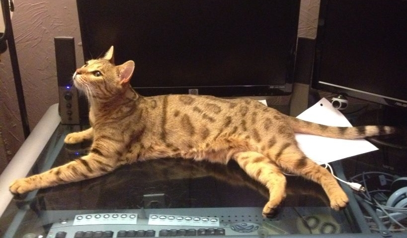
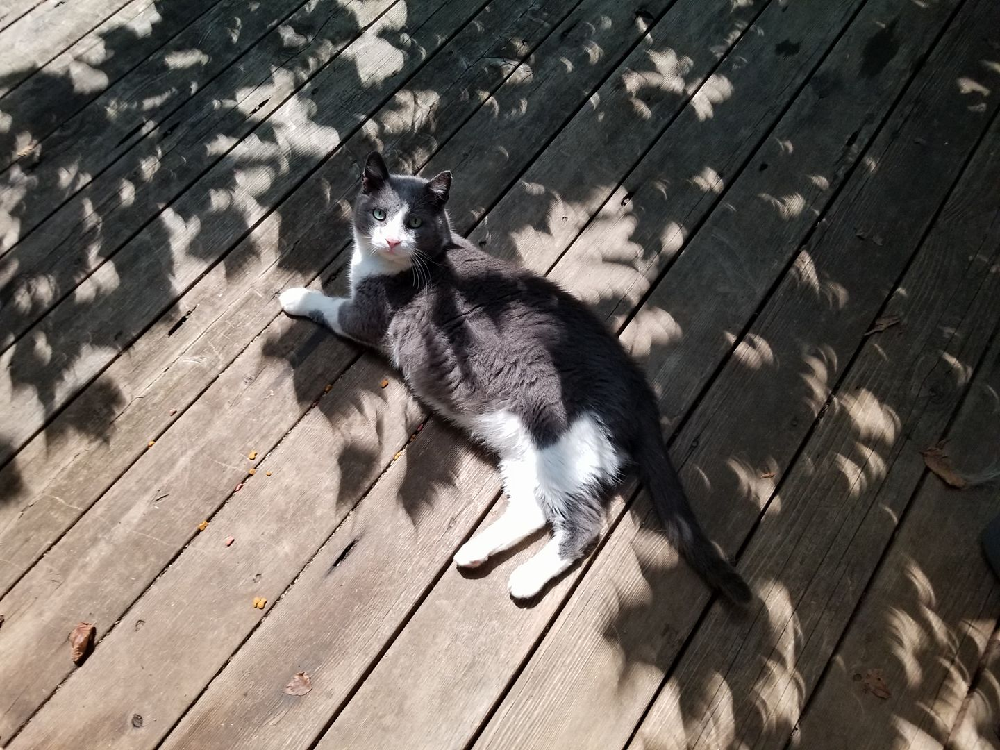

Warm Fuzzy Family
Dear Prudence
In November 2010 our lives would change forever when we were given a choice to take in a stray or know that she was going to be put outside without the means to care for herself. Our doors immediatly opened as my husband and I took in our first "furever" pet together. "Coalie" was brought over in a small carrier and as the door opened she strolled into our home and hearts; laying claim to all she saw. She was immediatly renamed Prudence since I love the Beatles and she loves to sing when noone is looking. Oh yes, she does sing. The second the house is quiet and settled down, every evening you'll hear Pru go from one end of the house to the other "singing" to herself. If she sees anyone or if you call to her, she'll stop long enough to make sure you aren't going to get out of bed; then she'll pick up at whatever chorus she left off at until her song is done.
Pru has a history of being a warrior princess. She has defended her territory against racoons, foxes, possums, and a plethora of other female cats. No problem with male cats, but she will go to war if its another girl. She's mellowed a little in her old age, which we are guessing to be about 11 years old this November. She has finally allowed us to cuddle with her (on her terms) and even graces us with her presence while we try to get work done (by laying across the keyboard). She'll always be my Bitch Pudding though; knocking her sister Mishka off the table, glaring at everyone from the top of her tower, or just straight up ninja jumping me from a shelf because (i'm assuming) she was bored & i was there.

Mischievious Mishka
In 2012 we got the crazy idea that Pru was lonely & wanted someone to play with. Since we decided no male cats a long time ago and Pru had shown a violent reaction to female cats; somehow we logiced out that a kitten would be fine. The following years would be spent in contemplation of just how WRONG a human can be when trying to convince themselves that they need a 2nd cat. "Owlie" came from a rescue after being found on the street with an eye infection and severly underweight. She immediatly proved herself to be a complete troublemaker and was renamed "Mishka", Russian for "little bear", because it sounded more badass to yell constantly in Russian. However the name would prove apt as she grew up...and kept growing...and kept growing...and then got put on a diet.
As Mishka derps through life she seems completely oblivious to how much Pru wants her to cease existing. Mishka is a little love bug that 100% wants to lay across your face while you sleep and smoother you with love. She has this odd habit of only wanting to drink water after she's thoughly soaked her paws in it, then shakes them like she can't figure out how they got wet. If you eat anything in front of her, she'll magically have exactly one small drop of drool under her chin as she purrs as loud as a hummer engine trying to convince you that she needs your pizza or she will wither away and die. This is immediatly proven false as soon as she waddles away and you try to figure out how a cat that's been on a diet this long is still that fat. Mishka was a dog in another life; or that's our running theory of why she absolutely loves to have her belly scratched. One final quark about this little mischievious bear is that she loves water with Marimo balls in it. In fact, after researching them for safety, we've added Marimo balls to all the water bowls to help encourage water drinking. Maybe she likes having a pet also?
Choosing Chewie
In April 2015 our lives would change forever when a sassy, beautiful senior dog showed up on our neighbors doorstep at 3am demanding to be let in. As I was the only foolish human up at 3am(studying as usual), I was the one that opened my door and suddenly found myself with a new family member.
Chewie was only with us for a year and I'm thankful for every second of those days. This section is short not for lack of stories, but because there are so many and every one still reminds me that I've lost her all over again. I'll leave it to say that she was my beautiful puppy and I miss her.
Oodles of Orphans
When we lived in Fenton, our house was apparently right next to a very popular "dumping" site for animals. Over the years we took in too many orphans to count. Some, like the gorgeous orange boy in the flowers below, we managed to rehome with new fur-ever homes.
Others, like the lanky beauty lounging on my desk, we managed to have a happy ending by finding their owners and reuniting them.
Mostly though, our orphans were either feral or had no interest in being rehomed. In those cases, we would Trap-Neuter-Return our visitors and make sure they had clean water, warm bedding, and frequent flea treatments.
When we moved, we had to acknowledge that we couldn't save all the ferals and strays of Fenton. But this wouldn't be a crazy cat lady story if I didn't try. As our last act of packing, we took our two most frequent visitors and moved them with us, so now these two good boys live on our back deck still and rule our backyard.
Marmalade is a gorgeous orange boy that is afraid of his own shadow. About the only thing he isn't afraid of is our longest feral visitor, Fluffy. Fluffy is an absolute unit of a cat. Over 3 years I worked to gain his trust; from not even being able to have my curtains pulled back without him running, to sitting on our deck ledge, to finally my day of absolute triumpgh when I get to pet him and confirm he is the fluffiest thing ever. I have lots of good photos of Fluffy, but I think his best story & photo involve the adventure of getting him neutered; this madcat decided to crawl up into our piping, rip down my dryer hose, crawled into the basement ceiling, and basically forced me to get inventive with cardboard and tape to ensure his safety & the houses survival while he recovered from surgery.
Future Family
In November 2019 our lives are going to change again as my patient, wonderful husband finally gets to fulfill his wish for a puppy. After years of his wife bringing home strays with 0 legs to 8 legs, the Cajun Nerd finally gets to choose who comes home next. As we begin to puppy proof the house and watch "How To Train Your Dragon" videos, I begin to wonder where this new journey will take us, but i'm excited for all the future fuzzy family we can embrace.